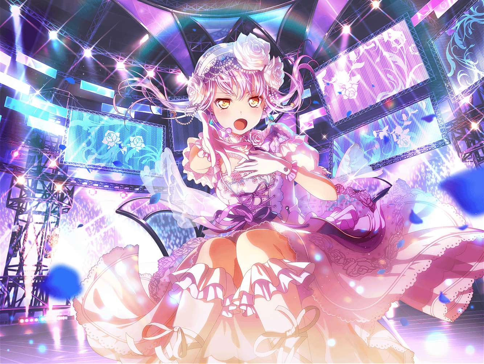

レコードショップ
友希那
確か燐子が言っていたのは、このCDのことよね……
まりな
あ、友希那ちゃん。
こんにちは
友希那
こんにちは、まりなさんに{{userName}}さん
まりな
友希那ちゃんは買い物？
お気に入りのバンドの新譜でも出たのかな？
友希那
いえ、そうではないんですが……
まりな
ん？
ここってクラシックのCDが置いてあるコーナーだよね？
友希那ちゃんがここにいるって、なんか珍しいね
友希那
実は先日、燐子に勧められたクラシックのCDを買いに来たんです
まりな
そっか。
確かに燐子ちゃんって、クラシックのこと詳しいもんね
友希那
私達の音楽性をもっと高めるためには、様々なジャンルの音楽を
取り入れていく必要があると思ったんです
まりな
なるほどねー。
それってある意味、バンドの醍醐味かもしれないよ
友希那
醍醐味？
どういうことですか？
まりな
バンドって絶対に１人ではやれないから、
メンバーそれぞれの音楽性に少なからず影響を受けて、
ちょっとずつ成長していくと思うんだ
まりな
だから今回、友希那ちゃんがクラシックを
聴いてみようとしてるのも、
バンドとしての新たな成長なのかもなって思ってね
友希那
影響を受け合うことが、新たな成長……
友希那
そんな考え方はしたことありませんでした。
確かに、長い時間一緒にいると、少なからず影響は受けますね
友希那
……あ。
そうしたら先日のあの話も成長と言えるのかしら……？
まりな
ん？
あの話って、何？
キミも聞きたいよね？
友希那
大した話ではないんですが……
実は先日、紗夜が日菜の影響でフライドポテトを
好きになったと言っていたんです
まりな
フライド……ポテト？
友希那
それにあこも、味の好みが宇田川さんと似ていると言っていました
友希那
バンドのメンバーだけでなく、
姉妹だってお互いの影響を受け合うのかもしれませんね
友希那
私は一人っ子なので、
そういうのはあまりよくわかりませんけど……
まりな
ううん。
別に姉妹じゃなくても、家族の影響っていうのは
たくさんあると思うよ？
友希那
家族の……影響？
まりな
友希那ちゃんに影響を与えた人……
ほら、誰か思いつかない？
友希那
……あ、お父さん
まりな
そうそう、そういうこと！
友希那
確かにそうですね。
まりなさんの言う通り、私が音楽を始めたこと自体、
家族の……父の影響なのは間違いないです
友希那
……ふふ。
なんだか……お礼を言いたくなりました。
ありがとうございます